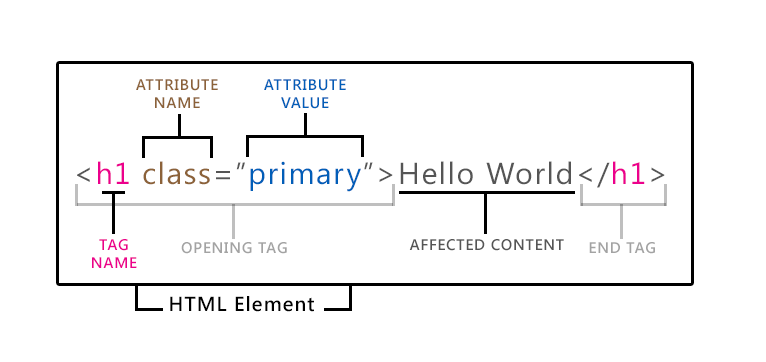
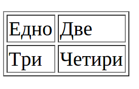
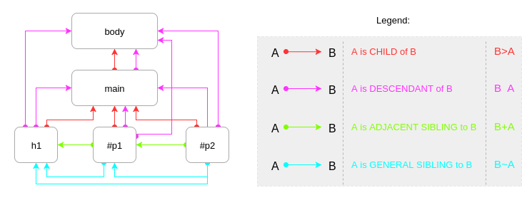

Keyboard shortcuts:
N/СпейсNext Slide
PPrevious Slide
OSlides Overview
ctrl+left clickZoom Element
If you want print version => add '
?print-pdf' at the end of slides URL (remove '#' fragment) and then print.
Like: https://wwwcourses.github.io/...CourseIntro.html?print-pdf
Created for

Iva E. Popova, 2022-2023,

WebCrawling - Overview
WebCrawling - Overview
What is Web Crawling
- A Web crawler (aka spider, internet bot), is a program that systematically browses the World Wide Web, typically operated by search engines for the purpose of Web indexing (Web spidering)
- Reference:
- Web Crawler @wikipedia
How a WebCrawler Works?
- A web crawler starts with a list of URLs to visit, called the seed.
- For each URL, the crawler finds links in the HTML, filters those links based on some criteria and adds the new links to a queue.
- All the HTML or some specific information is extracted to be processed by a different pipeline.
{kind=link}
Popular Web Crawler use cases
- Search engines (Googlebot, Bingbot, Yandex Bot…) collect all the HTML for a significant part of the Web. This data is indexed to make it searchable.
- SEO analytics tools on top of collecting the HTML also collect metadata like the response time, response status to detect broken pages and the links between different domains to collect backlinks.
- Price monitoring tools crawl e-commerce websites to find product pages and extract metadata, notably the price. Product pages are then periodically revisited.
- Social Network data extraction, Sentiment Analyses, ...
Web Crawling Legal/Ethical Concerns
- Crawlers consume resources on visited systems and often visit sites without approval.
- Issues of schedule, load, and "politeness" come into play when large collections of pages are accessed.
- Mechanisms exist for public sites not wishing to be crawled to make this known to the crawling agent. For example, including a
robots.txtfile can request bots to index only parts of a website, or nothing at all.
robots.txt - example
# The user agent named Googlebot is not allowed to crawl any URL that starts with http://example.com/search/.
User-agent: Googlebot
Disallow: /search/
# All other user agents are allowed to crawl the entire site.
User-agent: *
Allow: /
- Reference: robots.txt syntax
Example: SimpleWebCrawler
- In next example for links scraping, the Beautiful Soup library is used, which will be deeply explored in the upcoming lectures.
import requests
from bs4 import BeautifulSoup
from urllib.parse import urljoin
from concurrent.futures import ThreadPoolExecutor
class WebCrawler:
def __init__(self, start_url, depth=1, max_threads=5):
self.start_url = start_url
self.depth = depth
self.max_threads = max_threads
self.visited = set()
def get_html(self, url):
try:
response = requests.get(url, timeout=5)
response.raise_for_status()
return response.text
except requests.exceptions.RequestException as e:
print(f'Request exception: {e}')
return None
def fetch_links(self, url):
"""Fetch all links from a given URL."""
links = []
html = self.get_html(url)
if html:
# Create a BeautifulSoup object to parse the HTML content
soup = BeautifulSoup(html, 'html.parser')
# Find all 'a' (anchor) tags in the HTML that have an href attribute
for link in soup.find_all('a', href=True):
# Construct the full URL by combining the base URL with the relative link, extracted from a tag
full_url = urljoin(url, link['href'])
if full_url not in self.visited:
links.append(full_url)
return links
def crawl(self):
"""Crawl URLs up to the specified depth using threading."""
urls_to_visit = [self.start_url]
for _ in range(self.depth):
new_urls = set()
# Create a ThreadPoolExecutor to manage concurrent requests
with ThreadPoolExecutor(max_workers=self.max_threads) as executor:
# Use `executor.map` to apply `fetch_links` concurrently to each URL in `urls_to_visit`
# This returns an iterable (`results`) containing the links found for each URL
results = executor.map(self.fetch_links, urls_to_visit)
for links in results:
for link in links:
if link not in self.visited:
self.visited.add(link)
new_urls.add(link)
urls_to_visit = list(new_urls)
if __name__ == '__main__':
# Instantiate and run the crawler
crawler = WebCrawler("https://books.toscrape.com/", depth=1, max_threads=10)
crawler.crawl()
print("\nFound URLs:")
print("\n".join(crawler.visited))
Web Scraping - Overview
Web Scraping - Overview
What is Web Scraping
- Web Scraping is the automated process of extracting data from websites.
- It involves retrieving the HTML content of a web page and parsing it to extract specific information, such as text, images, links, or structured data.
- Web scraping is commonly used for various applications, including:
- Data Collection: Gathering large datasets for analysis or research.
- Price Monitoring: Tracking prices from e-commerce sites for comparison or market analysis.
- Content Aggregation: Compiling information from multiple sources into a single platform.
- Lead Generation: Collecting contact information from web pages for marketing purposes.
The Web Scraping Process
- Visual inspection: Determine what data to extract
- Tools: Browser's Dev Tools, such as Chrome DevTools
- Make an HTTP request to the webpage
- Tools: Python libraries like Requests or urllib
- Parse the HTML to extract relevant data
- Tools: Beautiful Soup
Using Chrome DevTools to inspect a WebPage
HTML overview and syntax
HTML overview and syntax
What is HTML?
- HTML stands for Hyper Text Markup Language
- HTML consists of a series of elements
- HTML elements describes the structure and content of a Web page
- HTML elements are styled with CSS
- HTML elements can be dynamically manipulated with JavaScript
- An HTML document consists of HTML elements!
- Most HTML elements are of the form:
<opening tag> content </closing tag> - In the opening tag we can specify some attributes:

- The content can be text, or another HTML element
- Some HTML elements are empty - they have no content, and according to HTML5 - no closing tag. For example:
<img src="images/cats.png">Examples
<h1>Hello World</h1>
<h1>Hello <em>World</em></h1>
<h1 class="primary">Hello World</h1>
<h1 class="primary" id="first">Hello World</h1>
HTML document structure
- Each HTML document must follow next structure:
<!DOCTYPE html>
<html>
<head>
...
</head>
<body>
...
</body>
</html>
Basic HTML Elements
Hyperlinks
HTML Element a (anchor)
- The
aelement is used to link to other web pages, either within the same site or to external sites using thehrefattribute - URL - identifier of a resource on the WWW or a local file. Required attribute!
- content - what will be displayed on the page as a link. It can be text, an image, or another HTML element.
- If you omit content, the browser will not display the link!
<a href="URL">content</a>
More about HTML hyperlinks
- General description of the use of hyperlinks in HTML: HTML Links@w3schools
- Concise reference for the HTML a element: HTML <a> Tag@w3schools
HTML lists
Unordered lists (UL)
ULelement is used as a container for a list where the order of items does not matter- 2 бр. яйца
- 1 ч.ч. прясно мляко или вода
- 1 ч.ч. брашно тип 500
- 1 с.л. краве масло
- Щипка сол, щипка захар
- An
ULelement could contain onlyLIelements! - A
LIelement could contains any HTML elements
Ordered lists (OL)
L - Яйцата се разбиват, докато се получи еднородна смес.
- Добавя се млякото, щипка сол и щипка захар.
- На малки порции се добавя пресятото брашно.
- Разбъркваме до получаването на гъста смес, с консистенция подобна на боза.
- Намазваме с масло предварително нагрятия тиган и поставяме черпак от сместа.
- След няколко минути обръщаме палачинката.
- An
OLelement could contain onlyLIelements! - A
LIelement could contains any HTML elements
HTML Tables
Basic Elements
- An HTML table is used to display data in a structured format consisting of rows and columns.
- It is created using the <table> element, with <tr> for rows, <th> for header cells, and <td> for standard data cells
- Reference: w3schools - HTML Tables
- Example

<table border="1">
<tr>
<td>One</td>
<td>Two</td>
</tr>
<tr>
<td> Three </td>
<td> Four </td>
</tr>
</table>
div and span elements
div and span elements
- The
divandspanelements in HTML are used for grouping content. divis used to group larger sections of content or block elements for styling and layout purposes.spanis used to group small portions of text or inline elements for styling purposes without breaking the flow of content.
CSS overview
CSS syntax
Syntax of CSS rule:
selector {
property1: value1;
property2: value2;
...
}
Example:
h1{
background-color: red;
color: white;
}
CSS Selectors Overview
Overview
- Patterns that determine which HTML elements the specified styles in the declarations will be applied to.
- They can be very simple, like '
*' or 'p', or much more complex, such as:a[href^="https://"]:hover
A list of all selectors defined in the standard (CSS1 - CSS3): css_selectors
The specification is currently being developed
CSS Selectors Level 4
Element (type) Selectors
/* All paragraphs in the document will have red font */
p {
color: red;
}
Action: selects all HTML elements of the specified type.
Universal Selector
* {
margin: 0;
padding: 0
}
Action: selects all HTML elements in the document.
It is not recommended to use it, as it slows down the processing of the page.
Selectors for class and id
HTML attributes: class and id
- id - only one element in the document can have a given id. That is, by using id we select only one element.
- class - we can assign the same class to multiple elements in HTML. This way, we can easily select all of them.
Paragraph 1
Paragraph 2
Paragraph 3
Paragraph 4
Paragraph 5
Values for class and id
- The values of the class and id attributes are chosen by the programmer but must start with a letter, followed by any combination of letters, digits, '_' and '-'.
- We can assign multiple classes to one element by separating them with a space.
- In the id attribute, we cannot have a space!
Paragraph 3
Class selector
- It is written with a dot (".") followed by the class value.
- It can be further specified by directly writing the element type before it.
/* Selects all HTML elements that have defined class="blue" */
.blue{
color: blue;
}
/* Selects all HTML elements of type 'p' that have defined class="red" */
p.red{
color: red;
}
Id selector
- It is written with a hash (hashtag) - "#", followed by the value of the id attribute.
- Since we can designate only one element in the entire HTML tree with a given id, it is meaningless to write the element type in front.
- For example:
p#vip{...}makes no sense and is not recommended to use.
/* Selects the element with id="main_title" */
#main_title{
color: red;
}
Example
/* Selects all HTML elements that have defined class="c1" */
.c1{
color: purple;
}
/* Selects all H1 elements that have defined class="c1" */
h1.c1{
font-style: italic;
}
/* Selector by id */
#vip{
color: #aa3333;
font-size: 2em;
text-shadow:
2px 2px #a000a0,
2px 2px #c000c0;
}
Purple Section:
Title
Paragraph
Subtitle
Paragraph
Paragraph with id="vip"
CSS Combinators (CSS Combinators)
Using combinators, we create selectors that take into account the position (context) of elements in the HTML tree.
Types of HTML Nodes
- Parent
- Child
- Descendants
- Siblings
The selectors that allow us to select elements based on their position in the HTML tree are formed using combinators:
Combinators are symbols that define a relationship between selectors, thus forming a compound selector.
selector1<combinator>selector2
| Combinator | Selector |
|---|---|
| ' ' (space) | parentSelector descendantsSelector |
| '>' | parentSelector > childrenSelector |
| '~' | previousSelector~generalSiblingSelector |
| '+' | previousSelector+adjacentSiblingSelector |
Types of HTML Nodes and Corresponding Combinators - Diagram
{kind=link}

Example: CSS Combinators
See the Pen CSS Selectrors - Combinators on CodePen.
Example: CSS Combinators
See the Pen Combinators Siblings - demo by Iva Popova (@webdesigncourse) on CodePen.
Example: CSS Combinators
See the Pen Task: ComplexCombinators by Iva Popova (@webdesigncourse) on CodePen.